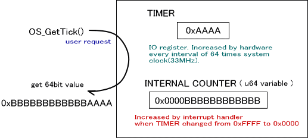

The tick system is a system for measuring time. The tick system uses one of four 16-bit hardware timers to allow for a 64-bit tick. The tick is a value incremented at regular intervals.
Initialization
Call OS_InitTick() to initialize the tick system. The tick system is required if you want to use the alarm system. Before calling OS_InitAlarm(), which initializes the alarm system, OS_InitTick() must be called.
Use OS_IsTickAvailable() to determine whether or not the tick system can be used.
Obtaining the Tick Value
The OS_GetTick() and OS_GetTickLo() functions obtain tick values.
The hardware timer performs an interrupt each time the 16-bit counter completes a cycle. Whenever that happens, the 48-bit internal counter increments.
When the user needs a tick value, calling OS_GetTick() returns a 64-bit value. The value consists of the internal counter shifted left by 16 bits, with the current timer value appended to the counter.

The OS_GetTickLo() function gets only the 16-bit timer portion.
The first time OS_InitTick() is called, the tick value will be 0. Thereafter, the tick value will be updated internally using the 16-bit timer-counter and its timer overflow interrupts. Accordingly, if interrupts are disabled for more than one cycle (65536 * OS_SYSTEM_CLOCK/64 Hz or approximately 7.5 frames) of the timer-counter the counter will fail to advance, and the difference between the tick value before and after will be inconsistent.
Configuring the Tick Value
The OS_SetTick() function sets the tick value.
However, there are times when setting the tick value from the application can cause malfunctions in the alarm system. It is recommended that this configuration not be changed unless absolutely necessary.
The Tick Value and Conversion to Actual Time
One count of the hardware timer is configured to be 64x the system clock (which runs at approximately 33MHz). The tick 1 count that uses the hardware timer 1 count is configured the same way.
Below is a table of the relationship between the counter value and the actual amount of time that can be used for calculations from this point. As long as these are thought of as 64-bit values, and as long as the tick system is not reset in-game, it can be assumed that the same values will not return during that game.
| Tick Value | Actual Amount of Time |
|---|---|
| 1 | Approximately 64/33514000 seconds |
0x100 (one cycle is 8 bits) |
Approximately 0.0004887 seconds = Approximately 0.03 frames |
0x10000 (one cycle is 16 bits) |
Approximately 0.125 seconds = Approximately 7.5 frames |
0x100000000 (one cycle is 32 bits) |
Approximately 8200 seconds = Approximately 2 hours 17 minutes |
0x10000000000000000 (one cycle is 64 bits) |
Approximately 1,120,000 years |
The functions that convert between tick values and actual time are listed below:
The functions for converting the actual time to the tick value (macro): OS_MicroSecondsToTicks*(), OS_MilliSecondsToTicks*(), OS_SecondsToTicks*()
The functions for converting the tick value into the actual time (macro): OS_TicksToMicroSeconds*(), OS_TicksToMilliSeconds*(), OS_TicksToSeconds*()
The Hardware Timer to Use
Timer 0 is used by default. The timer that is being used by the tick system cannot be used by the application. With the OS timer function, the tick is performed by SDK_ASSERT at the time of the DEBUG build.
An Overview of OS Functions (Time)
12/13/2004 Corrected typos
11/05/2004 Initial version
CONFIDENTIAL